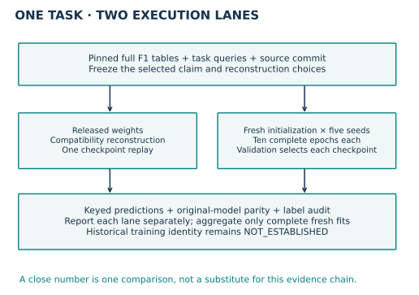
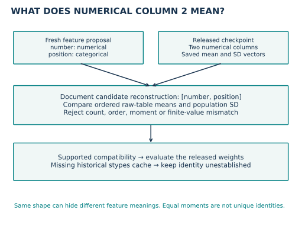
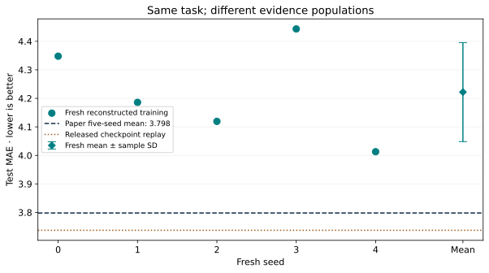

Year 4 · Quarter 3 · Lesson 143
RelGNN reproduction: defend the evidence
The win: run a complete selected RelGNN experiment and defend exactly what its evidence establishes. Plan about 25 minutes for the guided lesson, then a separate coding and written-defense session. Full training is an explicit GPU lane.
Lesson 141 exposed the atomic-route computation. Lesson 142 tested why mixing roles can matter and compared two architectures. Neither recovered the original training history. Now the unresolved question is operational: what must match before a number becomes reproduction evidence? This serves our mission of making relational-model claims that survive independent scrutiny.
Start from memory: why does a two-edge route fit inside one composite layer? Why is validation allowed to choose an epoch while test is not? Name an example where a close score hides a different experiment.
1 · Freeze the claim before running¶
The named target is RelGNN, rel-f1/driver-position, Table 2, test MAE 3.798 in Chen et al., ICML 2025, §5.2. The paper reports five-run averages. We select one complete task from its benchmark, not the whole paper and not a reduced query sample.
The pinned release provides the architecture and checkpoint-evaluation entry point. It does not fully specify the historical training run. We therefore freeze a reconstructed training recipe and name the gaps. A successful replay of supplied weights cannot fill them.
| Frozen item | Selected protocol |
|---|---|
| Query population | All 7,453 training, 499 validation, 760 test rows |
| Label | Mean recorded finishing position in (cutoff, cutoff + 60 days] |
| Data | Checksum-pinned full F1 archive; fresh graph materialization |
| Model | One composite layer, 128 output channels, four heads of 128 channels |
| Sampling | Uniform temporal 128/64 neighbors, bidirectional subgraph, batch 512 |
| Training | Adam .005, unclipped L1 loss, ten complete epochs, seeds 0–4 |
| Selection | First minimum validation MAE; no test-based tuning |
| Scoring | Unique (driver, cutoff) alignment; train-target 2/98 percentile clipping |
| Comparison | Mean and sample SD; predeclared ±0.20 MAE descriptive tolerance |
Five seeds and the architecture follow the chosen evidence target; optimizer, schedule and other unresolved details are documented reconstruction choices, not recovered historical facts. The tolerance is a course reporting rule, not a statistical equivalence test.


Predict: would five perfect checkpoint replays satisfy this five-fit training contract? No: repeated evaluation never supplies the missing training trajectories.
2 · Make feature meaning part of the checkpoint¶
A checkpoint tensor has a shape, but its columns also have meanings. Fresh inference assigns qualifying.position a categorical type. The released checkpoint expects two numerical columns. Loading it without intervention fails. Silently changing a type would conceal a different preprocessing path.
The compatibility reconstruction changes only this column to numerical. It then compares ordered column means and population standard deviations against the checkpoint's saved numerical normalization buffers. The candidate order is [number, position]; both buffers must agree within the declared tolerance. This is evidence for the proposed mapping, not proof of a unique mapping or recovery of the missing historical cache.


TODO 1 — verify_numeric_layout: check dimension, finite values, and ordered mean/std agreement. Reject an order swap even when every shape still matches. This function guards the actual compatibility materialization in the full notebook lane. Try predicting which check catches a wrong second column before running it.
The untouched freshly inferred graph goes to the training lane. The separately reconstructed graph goes to checkpoint replay. Comparing their scores does not isolate the feature-type effect: weights and training histories also differ.
3 · Trace the computation you are reproducing¶
Follow one driver query through tables, sampling, row/time encoders, constructor→result→driver fusion, destination attention and the scalar head. The source equations and architecture explain why the intermediate fact row participates in the message rather than disappearing into a flattened join.

The visible model below the notebook narrative implements the complete selected forward pass; the original source is a differential oracle. The trainer uses every training query each epoch and preserves owner-specific cutoffs in sampled batches. Source parity checks compare unclipped predictions on the same actual held-out batches, so clipping cannot hide model disagreement.
A source-matching implementation can still have a problem. The released numerical encoder produces nonfinite gradients in a missing-value path. We record their locations/counts and compare against the original implementation instead of repairing the model inside the reproduction. Finite predictions, a finite loss, and source parity do not establish healthy optimization. The evidence ledger distinguishes synthetic operator checks from the real first-batch gradient audit.
Predict: if only the gradient entries containing NaN agree with upstream, is the implementation correct? That evidence is insufficient: compare the finite entries and output tensors too, under matched dropout randomness.
4 · Select without looking at test¶
During training, validation chooses a checkpoint. When two epochs share the minimum validation MAE, choose the first. A later tied checkpoint has no stronger selection evidence. Test is evaluated only after the choice; we do not shorten schedules or discard seeds because their test scores are worse.
TODO 2 — first_validation_min: accept a contiguous finite epoch history and return the first minimum. Ignore any supplied test metric. This function controls checkpoint saving in the visible full trainer, not just a standalone quiz.
The selection-time validation score and the final validation score can differ: temporal neighbor sampling is stochastic and final scoring draws another sample. Save both values. Seed variation also does not provide query-independent uncertainty; the same drivers occur at multiple dates.
The F1 test population has already been inspected in preceding lessons. New weights give fresh training evidence on this fixed population, not a newly untouched confirmatory dataset.
5 · Reconcile all evidence before averaging¶
First verify full query keys against the task archive. Independently reconstruct labels from raw result rows, using the exact open-left, closed-right 60-day interval. Future participation determines which drivers have label rows; this benchmark is not a prospective prediction for every driver.
Then score each prediction file, check full schedules and chosen epochs, and verify five distinct fresh run IDs. Only after these checks may the five training metrics be aggregated. Keep the released-checkpoint metric on a separate row.
| Evidence lane | Validation MAE | Test MAE | What was executed |
|---|---|---|---|
| Published Table 2 | — | 3.798 | Reported five-seed mean |
| Checkpoint-compatible replay | 2.836661 | 3.737381 | One released set of weights; reconstructed qualifying types |
| Fresh reconstruction, five seeds | 3.130064 ± 0.088643 | 4.221853 ± 0.173512 | Ten full epochs per seed; sample SD |
All 7,554 held-out predictions independently aligned and rescored. Fresh score comparison: OUTSIDE_TOLERANCE. Historical training: NOT_ESTABLISHED. Whole paper: NOT_RUN.
Independent raw-table reconstruction checked 8,712 labels. The separate real first-batch source audit matched 640 nonfinite gradient entries and a maximum finite-entry difference of 1.2e-07. These gradient counts describe that diagnostic batch, not every seed or batch.


TODO 3 — evidence_verdict: require one complete reconstructed ten-epoch fit for each seed 0–4. A missing seed, duplicate seed, replay substituted for training, nonfinite metric, or shortened run makes execution incomplete. On complete evidence, apply the frozen descriptive tolerance. Historical identity remains NOT_ESTABLISHED even when the mean is close.
The helper consumes validated run records; it cannot itself authenticate archives or reconstruct labels. The surrounding audit establishes those prerequisites. This division matters: passing a convenient summary into a function is not an evidence audit.
6 · Execute, then write the verdict¶
The student notebook contains three live TODOs, immediate checks, visible model/preprocessing/trainer code, embedded figures and hash-checked author evidence. The executed solution demonstrates reference execution. The default CPU lane runs model fixtures and independently re-scores the author's predictions. It does not train the full task.
Set RUN_FULL_REPRODUCTION=True only in the documented pinned GPU environment to materialize the full graph, replay the compatible checkpoint and train all five fresh seeds. Its separate validation run uses seed100 plus replay, excluded from the five primary means. The protocol and commands, verification report, and reference record what actually ran. Live Colab and deployment remain NOT_CHECKED.
The aggregate budget is US$10, including preparation, all attempts, notebook validation and overhead. Each cloud call reserves its maximum worker allocation before dispatch; a pilot gates the remaining fits. A failed run stays in the cost ledger. An incomplete budget-limited run is reported honestly, never silently replaced with a smaller experiment. Provider rates.
EXIT — write before checking: give a five-sentence report identifying the paper target, the two execution lanes, the measured fresh mean/SD, the unresolved historical gap, and one limitation that survives a close score. Explain why changing the numerical encoder now would require a separately named extension. Learner status remains PENDING_WRITTEN_DEFENSE until you complete the work and defend it.
Primary reading: RelGNN §4 and §5.2, then inspect the released evaluation entry point. Ask the teaching agent to challenge your evidence verdict or walk through any unclear tensor operation.
Carry this forward. After predicting one number per driver, move to ranking many sponsors per facility. Lesson 144 asks how the candidate’s representation can depend on the query. Continue to Lesson 144.